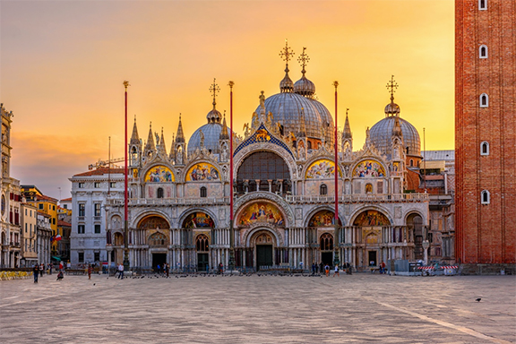
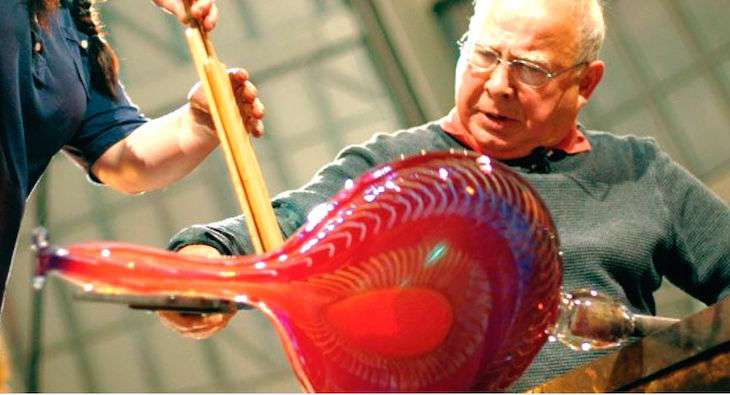
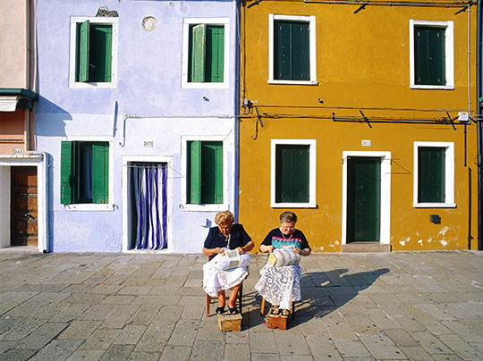

St. Mark Basilica
While in Italy, I stayed in Venice. There was an iconic cathedral called St. Mark Basilica that was
one of
the most gorgeous churches I had ever seen. Also in that square you could find people feeding
pigeons that would also
fly on your shoulder.

Murano Island, Glassblowing Factory
Also while in Italy, I visited the glass blowing island called Murano. Here
you can see live demonstrations of glass blowing artists making glass art.

Burano, Lace making Island
Burano is a Venetian island that is known for it's lace. Their lace making dates centuries back. A
lot of lace
from Burano was purchased by royalty.